광학기사 (2003-08-10 기출문제)
1과목: 기하광학 및 광학기기
1. 빛의 성질에 관한 내용중 틀린 것은?
- 입자적 성질을 나타내는 현상은 광전효과와 컴프턴(compton)효과가 있다.
- 전자기파이며 빛이 직진하는 성질 때문에 반사와 굴절 된다.
- 빛의 파동 성질을 나타내는 현상은 간섭과 회절이 있다.
- 빛은 음자(phonon)의 흐름이다.
(정답률: 알수없음)

2. 초점거리 f인 얇은 볼록렌즈로 배율의 크기 m을 얻기 위하여 물체거리 s를 어떻게 두면 되는가?
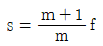
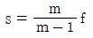
- s = (m + 1)f
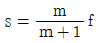
(정답률: 알수없음)
3. 천체망원경 대물렌즈의 초점거리가 40㎝, f수가 5 이다. 평행한 광선이 들어오고 바깥쪽 눈동자의 직경이 2㎝일 때 접안렌즈의 초점거리와 망원경의 배율을 구하면?
- 10㎝, 4배
- 8㎝, 3배
- 5㎝, 2배
- 2㎝, 1배
(정답률: 알수없음)
4. Fraunhofer 망원경의 시계 스톱(field stop)의 위치는 어디에 두는 것이 가장 적절한가?
- 대물경의 첫째면
- 접안경의 마지막면
- 대물경의 초평면(focal plane)
- 접안경 뒤 눈의 위치(eye relief)
(정답률: 알수없음)
5. 굴절률이 1.5, 양면의 곡률반경이 10㎝로 동일한 얇은 양볼록렌즈를 만들었다. 이 렌즈의 굴절능(power)은?
- +1.5D
- +10D
- +15D
- +30D
(정답률: 알수없음)
6. 단일렌즈에 광축에서 높이 h인 곳에 입사하는 광선과 2h인 곳에 입사하는 광선의 횡구면 수차의 비는?
- 1 : 0.5
- 1 : 2
- 1 : 3
- 1 : 4
(정답률: 알수없음)
7. 굴절율 1.5인 매질속에서 점광원으로부터 30㎝ 떨어진 지점에 도달한 광파의 환산버전스(reduced vergence) 값은?
- -5.0 디옵터
- -4.5 디옵터
- -3.3 디옵터
- -2.0 디옵터
(정답률: 알수없음)
8. 버전스(vergence)에 관한 다음 설명 중 바르게 기술된 것은?
- 발산광의 버전스는 양의 부호를 갖는다.
- 평면파의 버전스는 무한대이다.
- 버전스의 크기가 클수록 파면의 곡률이 작다.
- 볼록렌즈를 통과한 광파의 버전스는 입사광의 버전스보다 크다.
(정답률: 알수없음)
9. 공기에서 수면과 유리면으로 광선이 수직입사하는 경우, 반사광선의 세기를 각각 Iw와 Ig라고 할 때, 다음 설명중 맞는 것은? (단,물의 굴절율은 4/3, 유리의 굴절율은 3/2이다.)
- Iw = Ig
- Iw > Ig
- Iw < Ig
- 답이 없다.
(정답률: 알수없음)
10. 두께 12mm인 유리(n =3/2)로 만든 어항에 물(n =4/3)이 높이 24mm만큼 담겨 있다. 어항이 마루바닥에 놓여 있을 때 수면위에서 수직으로 바닥을 내려다 보면, 마루바닥은 수면으로부터 얼마의 깊이로 보이는가?
- 18mm
- 26mm
- 36mm
- 50mm
(정답률: 알수없음)
11. 얇은 볼록렌즈의 전방 20㎝지점에 놓인 물체로부터 나온광선이 렌즈를 통과한 후 렌즈의 후방 80㎝인 곳에 상을 형성하였다. 이 렌즈의 종방향 배율(longitudinal magnification)은 얼마인가?
- 4배
- 8배
- 12배
- 16배
(정답률: 알수없음)
12. 그림과 같이 볼록렌즈(초점거리 5㎝) 후방 2㎝인 곳에 오목렌즈(초점거리 -10㎝)가 배열된 렌즈계에서 볼록렌즈의 전방 20㎝인 지점에 물체가 놓여 있다. 두 렌즈의 직경이 서로 같다고 할 때, 출사동(exit pupil)의 위치를 결정하면?
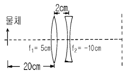
- 오목렌즈면
- 볼록렌즈면
- 볼록렌즈 후방 3.33㎝
- 오목렌즈 전방 1.67㎝
(정답률: 알수없음)
13. 그림과 같이 굴절율이 1.5인 유리봉의 한 쪽 끝을 곡률반경 1㎝가 되도록 볼록하게 연마하였다. 이 곡면에서 부터 좌측 4㎝ 되는 곳에 물체를 놓았을 때 상의 위치를 계산하면? (단, 물체는 공기중에 있다.)
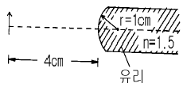
- 곡면에서 우측으로 6㎝인 지점
- 곡면에서 우측으로 4㎝인 지점
- 곡면에서 우측으로 2㎝인 지점
- 곡면에서 우측으로 1㎝인 지점
(정답률: 알수없음)
14. 두꺼운 렌즈에 대한 설명으로 틀린 것은?
- principal plane은 가상의 plane이다.
- 두 principal point는 서로 conjugate 관계이다.
- 렌즈 앞뒤가 같은 매질일 때 nodal point와 principal point는 일치한다.
- nodal point에서 굴절이 일어난다.
(정답률: 알수없음)
15. 직경이 4㎝, 초점거리가 80mm인 카메라 렌즈의 조리개를 직경 2㎝로 열였을 때의 f-number는 얼마인가?
- f/2
- f/4
- f/6
- f/8
(정답률: 알수없음)
16. stop에 대한 설명으로 틀린 것은?
- stop은 렌즈에 의해 동(pupil)을 형성한다.
- 주광선은 항상 입사동의 중심을 지난다.
- 굴절 망원경에서는 대물렌즈가 입사동이다.
- 출사동은 대물렌즈에 의해 형성된 입사동의 상이다.
(정답률: 알수없음)
17. f수가 f/4일 때 노출시간을 1/125초로 하였다면 f/8일 때 같은 노출량이 되기 위해 가장 적당한 노출시간은?
- 1/32초
- 1/64초
- 1/250초
- 1/500초
(정답률: 알수없음)
18. 그림은 어떤 수차를 설명하기 위한 것인가?
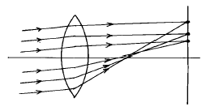
- spherical aberration
- Coma
- oblique astigmatism
- Distortion
(정답률: 알수없음)
19. 그림과 같이 입사높이에 따라 빛이 모이는 점이 변화하는 수차는?
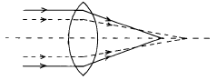
- 비점수차
- 코마
- 구면수차
- 왜곡수차
(정답률: 알수없음)
20. 그림의 렌즈들 초점거리는 같고, 모양만 다르다면 구면수차가 가장 작은 것(Ⅰ)과 큰 것(Ⅱ)으로 알맞게 짝지워진 것은?
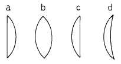
- Ⅰ : a, Ⅱ : d
- Ⅰ : b, Ⅱ : d
- Ⅰ : c, Ⅱ : a
- Ⅰ : d, Ⅱ : a
(정답률: 알수없음)
2과목: 파동광학
21. 굴절율이 n인 유리내부로부터 공기속으로 빛이 입사할 때 의 이 빛에 대한 전반사각은?
- sin(n)
- sin-1(n)
- sin(1/n)
- sin-1(1/n)
(정답률: 알수없음)
22. 광정보처리중 판독 및 표시 소자로 쓰이는 주사 광학계는 레이저광을 편향하는 방식과 피주사면을 이동하는 방식이 있다. 레이저광을 편향시키는 방식의 특징이 아닌 것은?
- 고속 주사가 가능하다.
- 광학계의 구성이 피주사면 이동방식보다 복잡하다.
- 주사성능은 광편향기 및 렌즈계의 성능으로 결정된다.
- 주사성능의 고 정밀도화가 피주사면 이동방식보다 수월하다.
(정답률: 알수없음)
23. 첫번째 Fersnel zone의 반경이 0.4mm이고, 입사 파장이 500㎚일 때 zone plate의 주(또는 1차) 초점거리를 구하면?
- 21㎝
- 32㎝
- 41㎝
- 80㎝
(정답률: 알수없음)
24. 사진필름의 photographic density D와 intensity transmittance τ 사이의 관계식으로 올바른 것은?
- D = e-τ
- D = eτ
- D = log τ
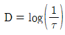
(정답률: 알수없음)
25. 그물모양의 물체를 수직방향으로 뚫린 단일슬릿을 사용하여 공간여과(spatial filtering)하려 한다. 여과된 상의 형태는 어떻게 되는가? (단, slit 위치는 그림의 fx, fy 위치에 둔다 하자.)
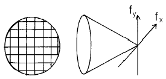
- 물체와 같은 모양
- 수평방향 성분만 남는 모양
- 수직방향 성분만 남는 모양
- 상이 생기지 않는다.
(정답률: 알수없음)
26. 빛이 큰 구멍을 통과할 경우 곧게 나아가지만 아주 작은 구멍을 빠져 나아갈 때는 그늘이 지는 곳에도 진입한다. 이러한 현상은 빛의 무슨 현상때문에 발생하는가?
- 회절
- 산란
- 편광
- 간섭
(정답률: 알수없음)
27. 그림은 광섬유의 단면을 표시한 것이다. Acceptance angle α를 표현한 식은?
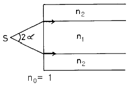
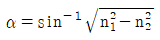
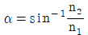
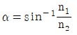
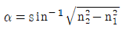
(정답률: 알수없음)
28. 홀로그램을 제작하기 위해 꼭 필요한 광원의 광학적 성질은?
- 결맞음(coherence)
- 편광(polarization)
- 단색성
- 직진성
(정답률: 알수없음)
29. 그림과 같은 광학 상처리장치의 입력 평면에 투과도가 {
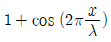
}인 회절격자를 두고 진폭이 1인 평면파를 비추었다. 주파수 평면의 반을 그림과 같이 불투명막으로 가리면 재생평면에서의 빛의 진폭 분포는 어떻게 되는가?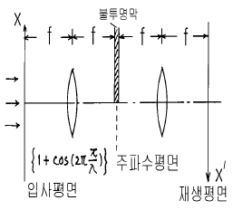
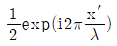
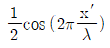
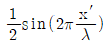
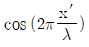
(정답률: 알수없음)
30. 광섬유는 광신호를 아주 먼 곳으로 전달하는데 쓰이는 것으로 유리나 플라스틱 등을 써서 그림과 같은 단면을 가지도록 머리카락처럼 가늘게 만든 것이다. 빛이 광섬유를 통해 먼 곳까지 잘 전달되려면 코아의 굴절율 ncoer와 클래드의 굴절율nclad 사이에 어떤 관계가 유지되어야 하는가?
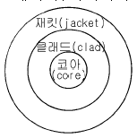
- ncoer < nclad
- ncoer = nclad
- ncoer > nclad
- ncoer =
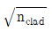
(정답률: 알수없음)
31. 너비 b인 슬릿을 백색광으로 비춘다. b가 어떤 값을 가질 때 붉은 빛(λ = 650nm)에 대한 첫번째 극소가 θ = 30°의 각으로 나타나는가?
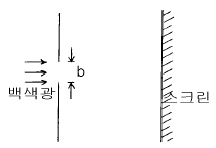
- 325nm
- 563nm
- 1300nm
- 1501nm
(정답률: 알수없음)
32. 영문자 A를 영상처리하여 여러 개를 복사하려 할 때 마스크로서 적당한 것은?
- 단일슬릿
- 다중슬릿
- 사각형슬릿
- 원형슬릿
(정답률: 알수없음)
33. 그림처럼 볼록렌즈와 후초점 면사이에 입력영상을 위치시켰을 때 후초점 면상에 형성되는 입력영상의 Fourier 변환 패턴은 입력영상이 후초점 면으로 접근할수록 어떻게 변화되는가?
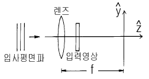
- 확대 된다.
- 변하지 않는다.
- 축소 된다.
- 점점 희미해 진다.
(정답률: 알수없음)
34. 수은등에서 방출되는 546㎚ 파장의 광은 0.03㎚의 파장폭을 갖고 있다고 한다. 이 광원을 마이켈슨 간섭계에 사용할 때, 무늬를 얻을 수 있는 두 광파사이의 최대 광노정차는 대략 얼마인가?
- 1mm
- 10mm
- 20mm
- 40mm
(정답률: 70%)
35. 직경이 4㎝인 망원경의 대물렌즈를 이용하여 천체 관측을 하려 한다. 유효 입사파장을 5.6x10-5㎝라 하면 이 망원경의 각 분해능은?
- 3.4x10-5 ㎭
- 2.8x10-4 ㎭
- 1.71x10-5 ㎭
- 1.42x10-4 ㎭
(정답률: 알수없음)
36. 그림과 같은 주기함수 f(x)를 Fourier series로 표현한식은?
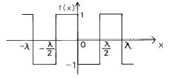
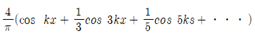
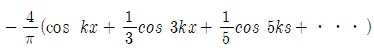
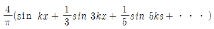
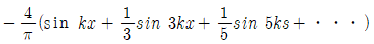
(정답률: 알수없음)
37. 그림과 같은 삼각 프리즘의 한면에 수직하게 광을 입사시켜 긴 변과 45° 각을 이룰 때 전반사가 일어남을 확인하였다. 프리즘을 이루는 매질의 굴절율은?
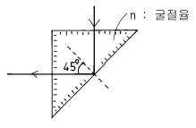
- √2 보다 크다.
- √2 보다 작다.
- √1.5 보다 크다.
- 1 보다 작다.
(정답률: 알수없음)
38. 파장 λ인 빛을 굴절율 ηs인 유리판에 수직으로 비춘다. 이 유리판에 굴절율 η(η>ηs)인 물질을 광학적 두께가 λ/4가 되게 입혀 주면 빛의 반사도는 막을 입히기 전과 비교하여 어떻게 변하는가?
- 변화가 없다.
- 반사도가 높아진다.
- 반사도가 낮아진다.
- 편광상태에 따라 다르다.
(정답률: 알수없음)
39. 홀로그래피 방법으로 회절격자를 만들려 한다. 광원의 파장이 0.6㎛라면 격자 간격의 최소 값은 얼마인가?
- 0.3㎛
- 0.6㎛
- 0.9㎛
- 1.2㎛
(정답률: 알수없음)
40. 광학 부품중 공간주파수 분석기의 역할을 하는 대표적인 것은?
- 프리즘
- 레이저
- 거울(반사경)
- 렌즈
(정답률: 알수없음)
3과목: 광학계측과 광학평가
41. 아포크로마틱 렌즈(apochromatic lens)제조에 사용되는 광학 결정은?
- 암염(NaCl)
- 불화 마그네슘(MgF2)
- 형석(CaF2)
- 수정(SiO2)
(정답률: 알수없음)
42. 분광계(spectrometer)로 어떤 물질의 굴절율을 측정하고자 한다. 다음 중 측정과정에 필요없는 것은?
- 시료물질 프리즘의 정각을 측정한다.
- 최소편의각을 측정한다.
- 사용해야 할 광원의 스팩트럼선을 선택한다.
- 굴절각을 측정한다.
(정답률: 알수없음)
43. 그림과 같이 코어(core)부가 굴절율 n1, 클래드(clad)부가 굴절율 n2인 광파이버(Optical fiber)가 있다. 이 때 이 광파이버의 개구수(numerical aperture)는 다음 중 어느 것인가?
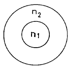
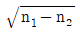
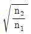
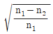
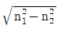
(정답률: 알수없음)
44. 공기중에 평행 평면판이 그림과 같이 놓여 있다. 두께가 t이고 입사각이 θ, 굴절각이 θ'일 때 광로의 변위 (displacement)는?
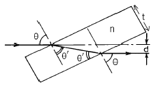
- t·sinθ (1 - n·cosθ)
- t·sinθ (n - cosθ)
- t·cosθ (1 - n·sinθ)
- t·sinθ {1 - (cosθ)/(n·cosθ')}
(정답률: 알수없음)
45. 광학유리의 굴절율은 가시광 영역에서 파장이 길어질수록 어떻게 변화하는가?
- 항상 감소한다.
- 변화가 없다.
- 항상 증가한다.
- 증가하거나 감소한다.
(정답률: 알수없음)
46. 망원경의 입사동은 어디에 있는가?
- 대물 렌즈
- 대안 렌즈
- 대물 렌즈의 초점
- 대안 렌즈의 초점
(정답률: 알수없음)
47. 수은등에서 방출되는 대표적인 빛의 파장이 아닌 것은?
- 589.3nm
- 546.1nm
- 404.7nm
- 253.7nm
(정답률: 알수없음)
48. 어느 쌍안경에 7x50 이라는 숫자가 쓰여 있다. 이 쌍안경의 대물렌즈의 초점거리는 140mm, 대안렌즈(필드렌즈)의 직경은 14mm이다. 입사동(entrance pupil)의 크기는 얼마인가?
- 7mm
- 10mm
- 50mm
- 100mm
(정답률: 알수없음)
49. 광학유리의 유리번호가 620364일 때 굴절율과 Abbe수(혹은 V번호)는 각각 얼마인가?
- 6.20, 364
- 6.20, 36.4
- 1.620, 364
- 1.620, 36.4
(정답률: 알수없음)
50. MgF2 코팅 약품을 사용하여 연마된 BK7 렌즈 표면에 기준파장 λ에 대한 단층반사감소 박막을 입히려고 한다. 다음 중 가장 좋은 증착막 조건은?
- 파장의 λ/4 광학 두께로 입힌다.
- 파장의 λ/2 광학 두께로 입힌다.
- 파장 λ의 광학 두께로 입힌다.
- 파장의 λ/8 광학 두께로 입힌다.
(정답률: 알수없음)
51. 일반적으로 사진기 렌즈 표면에는 MgF2의 얇은 박막을 입 렌즈표면에서 일어나는 반사를 되도록 막고 있다. 이것은 다음 중 광선의 어떤 성질을 이용한 것인가?
- 간섭
- 회절
- 산란
- 편광
(정답률: 알수없음)
52. 렌즈의 곡률반경 R1과 R2가 모두 30mm이며, 유리의 굴절률이 1.50일 때 그림과 같은 양볼록 얇은 렌즈의 초점거리는?
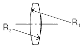
- 15mm
- 30mm
- 60mm
- 120mm
(정답률: 알수없음)
53. 쌍안경에 7x50 이라는 숫자가 쓰여 있고, 이 쌍안경의 대물렌즈의 초점 거리는 140mm, 대안렌즈(필드렌즈)의 직경은 14mm라면 대안렌즈의 초점거리는 얼마인가?
- 13mm
- 20mm
- 33mm
- 40mm
(정답률: 알수없음)
54. 광학유리 설명서에서 분산방정식 계수를 A0, A1,…, A5 까지 주어졌다. 분산방정식이 바르게 표현된 것은?
- n2 = A0 + A1λ + A2λ2 + A3λ3 + A4λ4 + A5λ5
- n = A0 + A1λ + A2λ2 + A3λ3 + A4λ4 + A5λ5
- n2 = A0 + A1λ2 + A2λ-2 + A3λ-4 + A4λ-6 + A5λ-8
- n = A0 + A1λ2 + A2λ4 + A3λ-2 + A4λ-4 + A5λ-6
(정답률: 알수없음)
55. 그림과 같은 천체망원경의 배율을 바르게 나타낸 것은?
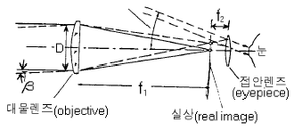
- βf1 / f2
- f1·f2 / D2
- f1 / f2
- f1 / D
(정답률: 알수없음)
56. 접안경(Eyepiece) 중에는 대표적인 전형으로 호이겐스형과 람스덴형이 있다. 다음 설명중 옳지 않는 것은?
- Eyelens와 Field Lens로 구성된다.
- 람스덴형에서는 Field stop이 Field Lens 전방에 형성된다.
- 호이겐스형은 Eye Relief가 상대적으로 크다.
- 람스덴형은 Reticle을 장착 교환하기가 용이하다.
(정답률: 알수없음)
57. 다음 광량 측정 소자들 중에서 가장 약한 빛을 측정할 수 있는 것은?
- 광증배관
- 실리콘(Si)소자
- InGaAs 소자
- HgCdTe 소자
(정답률: 알수없음)
58. 회절격자를 가지는 단색화 장치의 입력 슬리트와 출력 슬리트의 폭을 결정할 때 고려해야 할 가장 중요한 것은?
- 파장
- 분해능과 세기
- 초점의 위치
- 회절격자의 중심파장
(정답률: 알수없음)
59. 광학유리 제작자는 제품이 사용되는 외부환경을 고려해야만 한다. 광학유리 제작시에 세슘(Ce)을 포함시키는 것은 어떤 외부환경 때문인가?
- 방사선
- 충격
- 열팽창
- 습기
(정답률: 알수없음)
60. 빛이 공기 중에서 굴절율이 1.5인 유리면에 입사하고 있다. 이 때 공기와 유리의 경계면에서의 반사율은 몇 % 인가? (단, 공기의 굴절률은 1.0이다.)
- 3%
- 4%
- 5%
- 6%
(정답률: 알수없음)
4과목: 레이저 및 광전자
61. Ar레이저의 단일 종모드(single longitudinal mode) 발진에 필요한 소자는?
- Etalon
- Prism
- Grating
- Band - pass 필터
(정답률: 알수없음)
62. 결맞음 현상에 대한 설명으로 맞는 것은?
- 방출되는 빛의 위상차가 일정하다.
- 방출되는 빛의 진동수가 일정하다.
- 방출되는 빛의 파장이 일정하다.
- 방출되는 빛의 세기가 일정하다.
(정답률: 알수없음)
63. 레이저의 발진출력 변동에 영향을 주는 주원인으로 생각되지 않은 것은?
- 공진기의 거울이나 지지대의 진동과 열팽창에 의한 공진기의 미세진동 혹은 공진기 길이의 변화
- 열팽창 등에 의하여 공진기가 휘어 광축이나 평행도가 달라짐
- 방전전류나 플래시램프 등의 여기에너지 변동
- 공진기의 거울 마운트를 공모양이나 짐발마운트로 사용함으로써 생기는 변동
(정답률: 알수없음)
64. 다음중 결맞음(가간섭) 거리가 가장 긴 레이저는?
- 반도체 레이저
- He-Ne 레이저
- N2 레이저
- Ruby 레이저
(정답률: 알수없음)
65. 파장이 1㎛인 어떤 레이저의 결맞음 시간이 10-3sec라고 한다. 이 레이저의 결맞음 길이(Coherence length)는 얼마가 되겠는가?
- 1㎛
- 2㎛
- 3x105m
- 6x105m
(정답률: 알수없음)
66. 다음 결정구조를 지닌 재료 가운데 광학적으로 Uniaxial 성질을 보여주는 것은?
- Cubic 구조
- Hexagonal 구조
- Monoclinic 구조
- Orthorhombic 구조
(정답률: 70%)
67. 많은 종류의 레이저에서 프라즈마관의 창(Window)이 브루스터(Brewster) 각도로 부착되어 있는 것을 볼 수 있다. 그 이유로 가장 적합한 내용은?
- 결맞음성(coherence)을 좋게 하기 위해
- 회절효과를 줄이기 위해
- 창에서의 반사를 없애기 위해
- 간섭을 줄이기 위해
(정답률: 알수없음)
68. 다음 물질 중 광학적으로 Biaxial 성질을 보여주는 것은?
- 수정
- 다이아몬드
- Calcite
- Topaz
(정답률: 알수없음)
69. 레이저의 결맞음 거리는 자연선 천이에 의한 것보다 길게 할 수 있다. 그 이유로 타당한 것은?
- 레이저 작동시 Doppler효과에 의해 선폭이 늘어난다.
- 레이저 작동시 Doppler효과에 의해 선폭이 줄어든다.
- 레이저 작동시 레이저 선폭이 자연폭보다 줄어든다.
- 레이저 작동시 레이저 선폭이 자연폭보다 늘어난다.
(정답률: 알수없음)
70. 음향광학 결정이나 액체에 초음파를 인가했을 때, 결정이나 액체내에 생기는 현상을 가장 잘 설명한 것은?
- 결정이나 액체의 굴절율 변화가 주기적으로 생겨 일종의 회절 격자가 형성된다.
- 결정이나 액체내의 분자배열이 초음파 진행방향으로 정열된다.
- 결정이나 액체내에 복굴절 현상이 주기적으로 일어난다.
- 결정이나 액체의 투명성을 초음파 주파수에 비례하여 증대시켜 빛의 투과율을 높인다.
(정답률: 55%)
71. Pockels효과에 대한 설명중 올바른 것은?
- 중심대칭성을 갖지 않는 결정에서 굴절률은 전기장 세기의 제곱에 비례한다.
- 중심대칭성을 갖는 결정에서 굴절률은 전기장 세기의 제곱에 비례한다.
- 중심대칭성을 갖지 않는 결정에서 굴절률은 전기장 세기에 비례한다.
- 중심대칭성을 갖는 결정에서 굴절률은 전기장 세기에 비례한다.
(정답률: 알수없음)
72. 다음 중 광음향분광법(Acousto - Optic Spectroscopy)을 이용하여 측정할 수 있는 것은?
- 온도 측정
- 대기오염 측정
- 거리 측정
- 거대분자의 크기측정
(정답률: 알수없음)
73. 두 선형 편광자의 광축을 45° 로 하여, 빛을 통과시킬 때 빛의 투과 세기는 첫번째 편광자를 투과한 세기의 몇 %인가?
- 0%
- 50%
- 100√2 %
- 100%
(정답률: 알수없음)
74. 그림과 같이 수직 분극된 빛이 분극축이 45° 로 놓인 편광기(Polarizer)에 입사하면 이 편광기를 통과하는 광의량은 입사 광량의 몇 %가 되는가? (단, 편광기는 이상적인 것이다.)
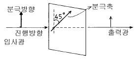
- 100%
- 45%
- 50%
- 0%
(정답률: 알수없음)
75. 펄스폭이 아주 좁은(짧은) 펄스레이저(10-12sec 이하)를 이용하는데 비교적 적합하지 않는 분야는?
- 정밀 거리 측정
- 전자의 빠른 운동분석
- 물질의 정밀한 분광특성 조사
- 광유도 화학반응 분석
(정답률: 알수없음)
76. 다음 중 단축결정(uniaxial crystal)을 나타내는 조건으로 적절한 것은? (단, ηx, ηy, ηz는 각각 x, y, z축 방향의 굴절률)
- ηx ＝ ηy ＝ ηz
- ηx ＝ ηy ≠ ηz
- ηx < ηy < ηz
- ηx ≠ ηy ≠ ηz
(정답률: 알수없음)
77. 굴절률이 각각 n1 = 1.55, n2 = 1.54인 유리를 사용하여 슬랩(Slap)도파로를 만들려 한다. 파장 0.85㎛인 레이저광을 이용할 경우 짝수 TMO 모드만을 전송하는 단일 모드슬랩 도파로(Single mode slab wave guide)를 만들려면 코어유리의 두께는 얼마인가?
- 2.43㎛보다 작아야 한다.
- 4.86㎛보다 작아야 한다.
- 2.43㎛보다 커야 한다.
- 4.86㎛보다 커야 한다.
(정답률: 알수없음)
78. 빛의 성질을 말할 때 다음 중 파동광학적으로 설명해야 할 현상은?
- 직진
- 반사
- 굴절
- 회절
(정답률: 알수없음)
79. 공진기 길이가 30㎝인 레이저에서 능동 모드 락킹(mode locking)을 하기 위해 전기광학 변조기를 공진기내에 장치하였다. 변조기에 의한 셧터 열림시간 사이의 간격이 얼마나 되어야 모드락킹 펄스가 생성되는가? (단, 공진기내 굴절률은 1로 한다.)
- 10-9sec
- 2x10-9sec
- 10-8sec
- 2x10-8sec
(정답률: 알수없음)
80. 다음의 레이저 중에서 파장 가변레이저라고 할 수 없는 것은?
- Ti : Al2O3 레이저
- 자유전자 레이저
- KrF 레이저
- Dye 레이저
(정답률: 알수없음)